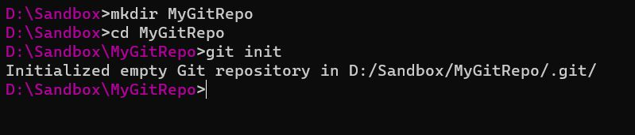
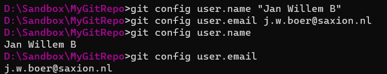
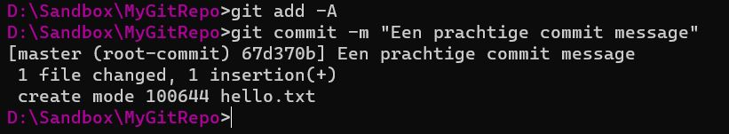
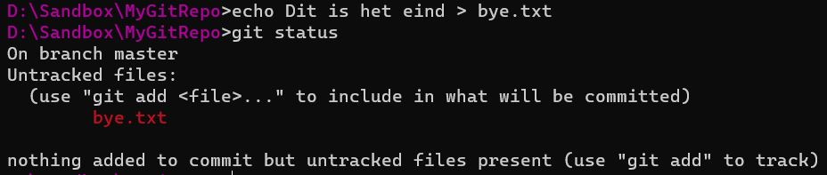
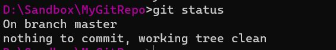
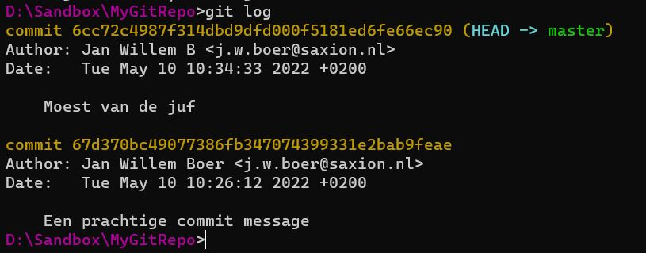
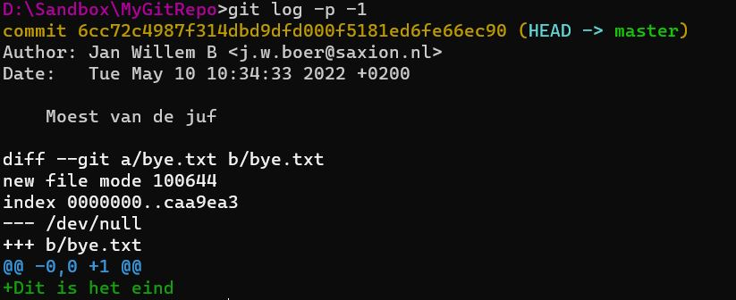

Zorg dat je git hebt geïnstalleerd. Op Windows: Git for Windows, op Linux: sudo apt install git.
Maak een nieuwe directory aan en cd er naar toe. Maak van deze directory nu een git repository met het commando git init.

Maak nu een bestand aan in deze directory, bijvoorbeeld door echo Hello World > hello.txt, of op een andere manier die je leuk vindt.
Voordat je je eerste commit gaat doen, moet je altijd je naam en email instellen. Het maakt niet uit wat je hier invult: dit is de naam en het emailadres waarmee voortaan je commit messages worden "getekend". Dus zorg wel dat het op een of andere manier duidelijk is dat jij dat bent.
Je doet dit met git config user.name "Jouw Naam" en git config user.email email@example.com.

Nu kun je je eerste commit doen. Een commit kent twee stappen:
Voor nu hoef je het onderscheid tussen stagen en committen niet te kennen en kun je het altijd zo doen:
git add -Agit commit -m "Een mooie commit message". Ze bij de commit message iets waar je later geen spijt van krijgt.
Doe nu een wijziging in het bestand, of maak een nieuw bestand aan.
Als je nu git status aanroept, dan zie je dat er wijzigingen zijn:

Commit deze op dezelfde manier als de eerste commit:
git add -Agit commit -m "Nieuw bestand, moest van de juf"ALs je nu opnieuw naar git status kijkt, dan zie je dat er geen wijzigingen meer zijn.

Het bekijken van de git history is in de terminal niet echt fijn. Het beste kun je daarvoor een GUI tool voor gebruiken. Visual Studio Code kan dat, of Atlassian SourceTree, en eindeloos veel andere applicaties.
Maar het kan wel in de terminal, met git log -4, waarbij "4" het aantal commits is dat je terug wilt kijken:

Met git log -p -1 kun je de inhoudelijke verschillen bekijken van de laatste commit. Dit is niet geschikt voor mensen met terminalfobie.

Het is lastig te lezen (daarom is een GUI ook fijner). Maar soms kan het handig te zijn om snel een wijziging te bekijken. Als je goed kijkt, zie je onderaan in het groen de inhoud van het toegevoegde bestand. Regels die verwijderd zijn, worden in het rood afgebeeld (niet van toepassing in de screenshot).
Dit heeft nog niets met samenwerken te maken: het speelt zich tot nu toe allemaal op je eigen harde schijf af. In het vervolg zie je hoe je dit kunt gebruiken om mee samen te werken.